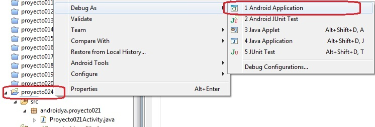
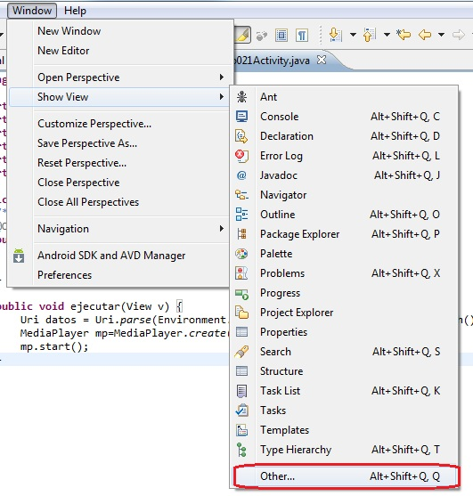
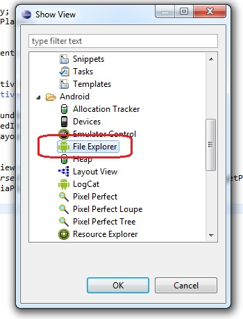
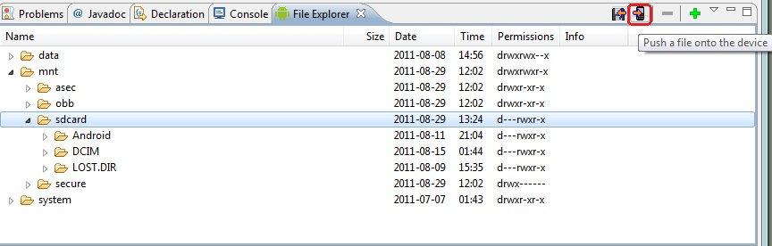
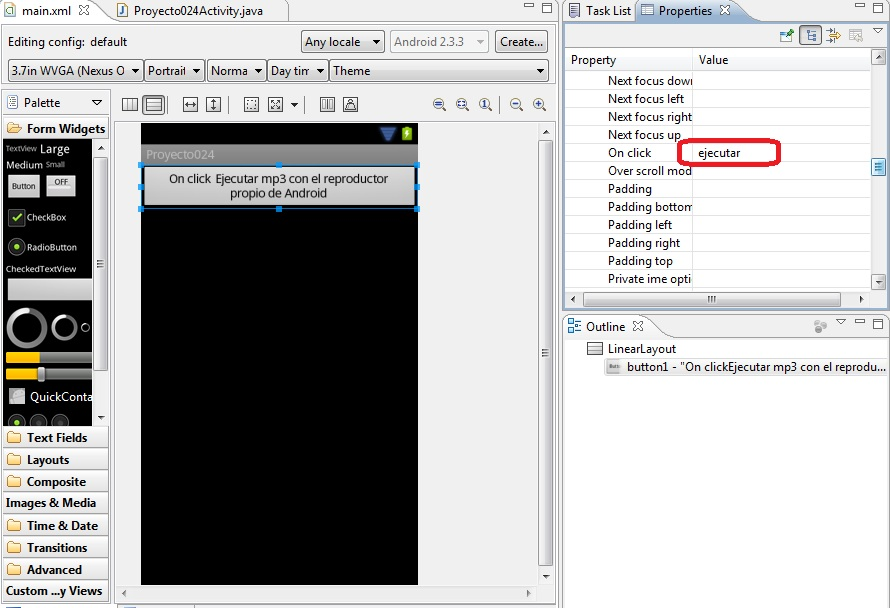

26 - Reproducción de audio utilizando el reproductor propio de Android (vía Intent)Ya se encuentra disponible el nuevo tutorial para aprender android con el nuevo entorno Android Studio propuesto por Google y que remplaza a Eclipse. |
Otra forma de ejecutar un archivo mp3 es mediante el reproductor interno de Android. Esta aplicación reproduce todos los formatos soportados por Android y tiene una interfaz que le será familiar al usuario de nuestra aplicación.
Disponer un botón con la etiqueta: "Ejecutar mp3 con el reproductor propio de Android", luego cuando se presione reproducir el archivo de audio respectivo con el reproductor de Android via Intent. El archivo de sonido almacenarlo en la tarjeta SD.
Luego de crear el proyecto debemos ejecutar la aplicación en modo depuración para poder acceder a la tarjeta SD que crea el emulador Android. Para ejecutar la aplicación en modo "Debug" presionamos el botón derecha del mouse sobre el proyecto y seleccionamos la opción "Debug A" "Android Aplication":
Una vez que se este ejecutando la aplicación (no importa que todavía no hemos implementado su funcionalidad) procedemos a abrir la ventana "File Explorer" de Android. Seleccionamos del menú de opciones de Eclipse: Window -> Show View -> Other :
Y en esta ventana seleccionamos Android -> FileExplorer:
Ahora podemos ver la ventana donde administramos los archivos contenidos en la tarjeta SD que emula el "Android Virtual Device":
En la carpeta sdcard debemos subir el archivo mp3 (debemos seleccionar esta carpeta con el mouse)
Esto lo hacemos mediante un botón que aparece en la parte derecha de esta ventana "Push a file onto device", luego de esto tenemos el archivo montado en la tarjeta SD:
Creamos la interfaz con el Button y especificamos el evento On click:
El código fuente es:
package com.androidya.proyecto024;
import android.app.Activity;
import android.content.Intent;
import android.net.Uri;
import android.os.Bundle;
import android.view.Menu;
import android.view.View;
public class MainActivity extends Activity {
@Override
protected void onCreate(Bundle savedInstanceState) {
super.onCreate(savedInstanceState);
setContentView(R.layout.activity_main);
}
@Override
public boolean onCreateOptionsMenu(Menu menu) {
// Inflate the menu; this adds items to the action bar if it is present.
getMenuInflater().inflate(R.menu.activity_main, menu);
return true;
}
public void ejecutar(View v) {
Intent intent = new Intent(android.content.Intent.ACTION_VIEW);
Uri data = Uri.parse("file:///sdcard" + "/gato.mp3");
intent.setDataAndType(data, "audio/mp3");
startActivity(intent);
}
}
Creamos un objeto de la clase Intent y un objeto de la clase Uri referenciando al archivo mp3 almacenado en la tarjeta SD. Indicamos mediante el método setDataAndType el Uri y el tipo de archivo a reproducir. Activamos la aplicación mediante startActivity.
Este proyecto lo puede descargar en un zip desde este enlace:
proyecto024.zip